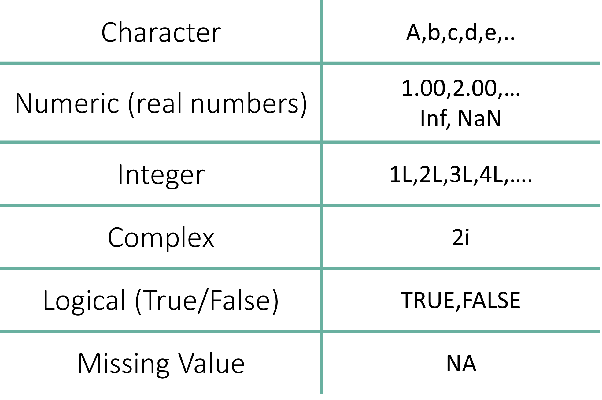

class("a")[1] "character"Atomic classes are the fundamental data type found in R. All subsequent data structures are used to store entries of different atomic classes.
If an Excel spreadsheet is your storage system, the Atomic Class is the actual “stuff” written inside each cell—whether it’s a number, a word, or a simple “True/False.”

The Character class represents text data. This can be a single letter, a word, or an entire sentence. In R, anything wrapped in quotation marks is treated as text.
class("a")[1] "character"Understanding the class() Function
Functions: In R, a function typically follows the format function_name().
Arguments: The information you put inside the parentheses () is called an argument. The function takes that argument, processes it, and returns a result.
Testing Types: The class() function is your go-to tool for identifying the data type of any object or value.
Efficiency Tip: The Quotation Shortcut
In RStudio, you don’t have to manually type quotation marks at the beginning and end of every word or sentence. There is a “surround” shortcut that handles this for you:
Highlight the word, number, or sentence you want to wrap in quotes.
Press the Quote Key:
" (Shift + ') or ' key.Result: RStudio will automatically place a quotation mark at the start and the end of your selection.
Wait, where else does this work?
This shortcut also works for other “pairing” symbols in RStudio:
Parentheses: Highlight text and press ( to get (text).
Brackets: Highlight text and press [ to get [text].
Braces: Highlight text and press { to get {text}.
Note: This is a specific feature of the RStudio IDE. While it works in some modern code editors (like VS Code), it generally will not work in standard software like Microsoft Word or PowerPoint.
R can handle strings of any length, from a single word to a full paragraph.
class("Hello World!")[1] "character"You can even store long blocks of text, such as this land acknowledgement:
class("McGill University is on land which has long served as a site of meeting and exchange amongst Indigenous peoples, including the Haudenosaunee and Anishinabeg nations. We acknowledge and thank the diverse Indigenous peoples whose presence marks this territory on which peoples of the world now gather.")[1] "character"Single vs. Double Quotes
In R, there is no functional difference between using double quotes (” “) and single quotes (’ ’). However, double quotes are the standard convention in the R community.
The Rule for “Nesting” Quotes: If your text contains a quote, you must use the other type of quotation mark on the outside so R knows where the string starts and ends.
# If the text has single quotes, use double quotes outside
class("It's a beautiful day in Montreal.")[1] "character"# If the text has double quotes, use single quotes outside
class('We said, "R is powerful."')[1] "character"It is important to remember that if you wrap a number in quotes, R will treat it as text, not as a mathematical value.
You cannot perform math (like addition) on a character “1”.
class("1")[1] "character"One of the most frequent mistakes for beginners is forgetting the quotation marks. This is where the difference between a Value and a Variable becomes critical.
If you try to check the class of a without quotes, you will encounter an error:
class(a)Error:
! object 'a' not foundWhy did this fail?
Without the quotation marks, R doesn’t see the letter “a”.
Instead, it looks for an object or variable named a on your workbench (Environment). Since we haven’t created a variable named a yet, R reports: Error: object ‘a’ not found.
Anything inside quotation marks is a Character.
This includes numbers, symbols, and entire paragraphs.
Characters are the primary way we store metadata (like “Control” vs “Treatment” groups) in bioinformatics.
In R, any number—with or without decimals—is recognized as the Numeric data type by default.
Even if you type a whole number like 1, 234, or 100, R stores them as “Numerics” (specifically Doubles) unless you explicitly tell it otherwise.
class(123)[1] "numeric"class(2.0)[1] "numeric"R also has built-in objects for common mathematical constants, such as π.
pi[1] 3.141593class(pi)[1] "numeric"R includes several predefined objects for mathematical and logical use. pi is the most common, but you will also encounter others like Inf (Infinity) and NaN (Not a Number) during your analysis.
One of the most important habits to build is checking whether your number is being read as math or text.
3.14[1] 3.14"3.14"[1] "3.14"class(3.14)
## [1] "numeric"
class("3.14")
## [1] "character"When you run code, R shows you exactly how it “sees” your input:
Input 3.14: R returns 3.14. It treats this as a value you can add, subtract, or multiply.
Input “3.14”: R returns “3.14”. Because of the quotation marks, R treats this as a Character string. You cannot perform math on this; to R, this is no different than the word “Apple.”
Why does R call a whole number “Numeric” instead of an “Integer”?
By default, R uses Double-precision floating-point format (often called “Doubles”) to store numbers.
Precision: Each “Double” is stored using 8 bytes of memory and is accurate up to approximately 16 significant decimal digits.
Flexibility: Storing numbers with decimals by default allows R to handle complex division and scientific calculations without losing data.
Forcing an Integer
If you specifically need a whole number to be stored as an Integer (which uses less memory), you must add an L after the number: class(1L) will return "integer".
However, for 99% of medical research tasks, the default Numeric setting is exactly what you need.
Integers are numbers that do not have a decimal component.
While R defaults to “Numeric” (Double) for almost everything, you can explicitly tell R to store a number as an Integer by adding the suffix *L* after the value.
class(1234L)[1] "integer"Why the “L”?
The “L” stands for Long, a legacy term from older programming languages (like C) used to denote a specific amount of computer memory. In modern R, it simply tells the computer: “Store this as a whole number, not a decimal.”
Where the Integer data type is necessary
In most day-to-day experimental medicine tasks, you won’t need to worry about this.
However, there are specific scenarios where using Integers is critical:
A complex value in R is defined via the pure imaginary value i.
class(2i)[1] "complex"The Logical data type represents binary outcomes: TRUE or FALSE.
For example, in research, these are the outputs of logical tests (e.g., “Is this patient’s BMI > 30?”).
class(TRUE)[1] "logical"class(FALSE)[1] "logical"One of the most powerful features of logical values is their underlying numeric value:
TRUE is treated as 1.
FALSE is treated as 0.
This allows you to quickly count occurrences in a dataset. For example, if you want to know how many patients in your study are “Males,” you can simply “sum” a logical vector of their sex, and R will give you the total count.
R allows you to use T and F as shorthand for TRUE and FALSE.
class(T)[1] "logical"class(F)[1] "logical"A Note on Best Practices
While using T and F is a common “lazy” shortcut, most professional programmers recommend using the full words TRUE and FALSE.
Why?
Because in R, T and F are technically variables that can be overwritten (e.g., someone could accidentally set T <- 0), whereas the full words TRUE and FALSE are “reserved” and cannot be changed. For reproducible research, stick to the full words!
R is strictly case-sensitive. The logical values must be in all caps.
If you use “Sentence case” (e.g., True), R will assume you are looking for a variable with that name and throw an error.
class(True)Error:
! object 'True' not foundclass(False)Error:
! object 'False' not foundSummary
There are only two ways to correctly define a logical data type:
TRUE / FALSE (Full words, all upper case).
T / F (Single letters, upper case).
In bioinformatics, you will use logicals constantly to filter your data. For example:
gene_expression > 10 returns a list of TRUE/FALSE values.
You can then use that list to keep only the genes where the result was TRUE.
In R, missing data is represented by the logical constant NA (Not Available). It acts as a placeholder to indicate that a data entry is simply not there.
Useful for manipulating data sets where missing entries are common.
NA[1] NAclass(NA)[1] "logical"Why use NA instead of 0?
It is a common mistake in research to fill missing entries with 0.
However, in a medical context, zero is a value (e.g., zero glucose, zero heart rate), whereas NA is an absence of data (e.g., the patient missed their appointment). Treating an NA as a 0 will incorrectly skew your averages and invalidate your statistical tests.
Automated Data Handling
When you import an Excel sheet into R, empty cells are automatically converted to NA. Most R functions are designed to handle these gracefully. For example, when calculating the average weight of a group, you can tell R to ignore the missing entries: mean(weights, na.rm = TRUE)
Efficient Quality Control (QC)
Instead of scanning a spreadsheet with thousands of rows by eye, you can use R to:
Count exactly how many entries are missing in a clinical trial.
Identify which patients have incomplete gene expression profiles.
Filter your dataset to remove any rows or columns that contain NA values in just one line of code (e.g., na.omit()).
Transparency and Reproducibility
Using NA keeps your data “honest.” It is a professional standard to keep notes on why data is missing (e.g., “sample contaminated” or “patient withdrew”). By keeping NA in your raw data and handling it with code, you create a clear, reproducible trail of how you arrived at your final results.